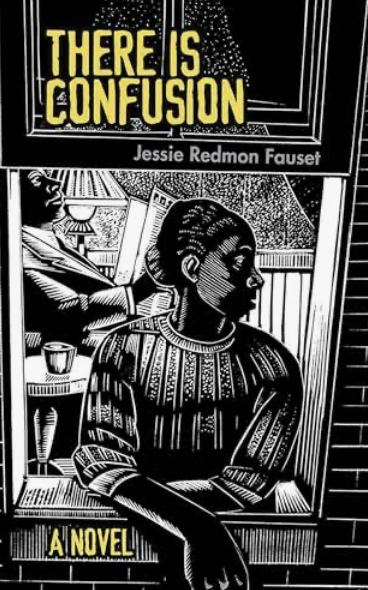

The Harlem Renaissance launched at The Civic Club, at the corner of 12th Street and Fifth Avenue in Greenwich Village, on the evening of March 21, 1924, at a dinner organized by Charles S. Johnson to celebrate the debut novel of a single woman.
That woman was Jessie Redmon Fauset, literary editor of The Crisis (1919–1926), author of There Is Confusion, and the quiet architect of a generation. From her desk, she nurtured Langston Hughes, Jean Toomer, Countee Cullen, Claude McKay, Nella Larsen, and Gwendolyn Bennett: the voices that would become the Harlem Renaissance itself.
The dinner led directly to the landmark March 1925 Survey Graphic issue, and to the movement we know today. Over the century that followed, Fauset was gradually sidelined from the story she had written into being. This festival returns to that night, and gives it back to her.
Jessie Redmon Fauset
Literary Editor, The Crisis
1919–1926

There Is Confusion
Jessie Redmon Fauset's Debut Novel
1924
The Program
Ten programs across two weeks. Harlem and Greenwich Village.
Events are free and open to the public, except tours and films. Where registration is open, RSVP links are provided.
April 16Thursday
Film: I Remember Harlem, Episodes I & II
A two-part opening screening on the making and memory of Harlem.
PastDetails forthcoming
April 19Sunday
The Village Walking Tour
Union Square, the NAACP, the Salmagundi Club, First Presbyterian Church, and The Civic Club. Guides: Gail Edwards, Debra James, Afiya Dawson, Roberta Todd, Lana Turner.1:00 PM · Greenwich Village
PastRegistered to date
April 19Sunday
Book Discussion: There Is Confusion
On the grounds of the former Civic Club. Moderated by Jane Tillman Irving. Hybrid: in person and online.3:30 PM · Former Civic Club
A Harlem Walking Tour: Literary Salons of 1920s Harlem
Led by John Reddick. The Dark Tower, Niggerati Manor, Dream Haven. Concludes with a gospel concert at Convent Avenue Baptist Church. Organized by Harlem One Stop.3:30–6:30 PM
Featuring the Chris McBride Band and the Eyal Vilner Swing Band. In celebration of International Jazz Month and the Savoy Ballroom centennial.4:00–8:00 PM · Our Lady of Lourdes, Harlem
Symposium: The Life and Work of Jessie Redmon Fauset
Dr. Victoria Chevalier, Dr. Farah Jasmine Griffin, Dr. Zoe L. Henry, and The Honorable Debra A. James. Marking the 144th anniversary of Fauset's birth.6:00–8:00 PM · The Schomburg Center
Program Finale: The Harlem Renaissance's Birthplace
Pulitzer winners Dr. David Levering Lewis and Dr. Jeffrey C. Stewart with Dr. Monica L. Miller. Music by Joy F. Brown and Brandie Sutton.6:00–9:00 PM · First Presbyterian Church, 12 W 12th St
Slaves to Fashion · Superfine: Tailoring Black Style
Chair, Africana Studies · Barnard College
Dr. Victoria Chevalier
Fauset Symposium · April 27
Scholar
Dr. Farah Jasmine Griffin
Fauset Symposium · April 27
Scholar
Dr. Zoe L. Henry
Fauset Symposium · April 27
Scholar
Hon. Debra A. James
Fauset Symposium · April 27
Jurist
About
The Literary Society.
Organized in January 1982, The Literary Society is a New York City book discussion group based in Harlem, dedicated to the study of the African Diaspora through literature.
The Society has gained a reputation for occasionally developing public programming to engage broader audiences. The most recent was the 2022 staging of The Wedding Reception: An Artful Imagining of the 1838 Wedding of Anna Murray and Frederick Douglass.